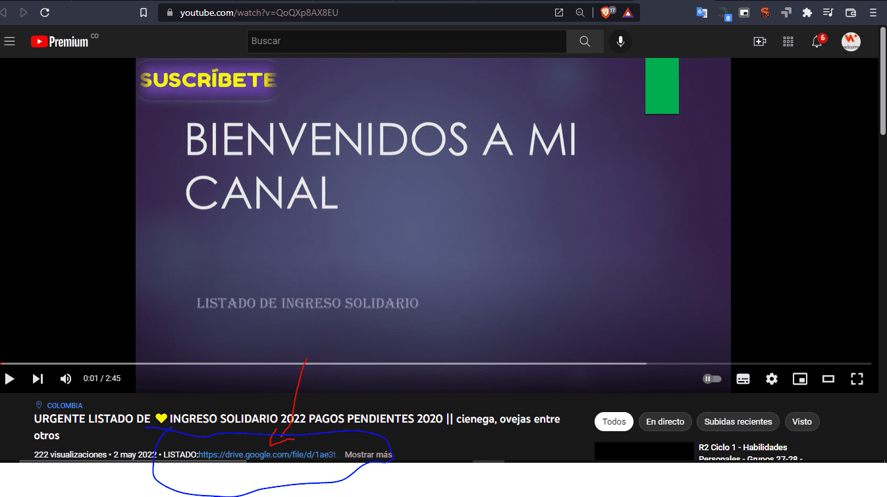

El Dr. Pierre GarcÃa, Director (e) de Prosperidad Social, el pasado 22 de Abril confirmo el inicio de la primera fase de giros extraordinarios hasta hoy 6 de Mayo podra retirarlos.
“Hacemos un especial llamado a los beneficiarios del programa Ingreso Solidario: que no cobraron algún ciclo en 2020 o 2021 para que verifiquen si han sido programados para esta primera fase.
Importantes Noticias para los beneficiarios de este programa, ya se encuentran publicados la Base de Datos de beneficiarios de la fase 1 de este año 2022, los ciclo de pagos extraordinarios NO COBRADOS en las vigencias 2020 y 2021 del programa Ingreso Solidario , esto con el fin de facilitar la consulta de personas que hacen parte de este ciclo y asà puedan realizar los cobros pertinentes en las fechas estipuladas por el programas.

Aqui debajo del 👆​👆​ video 👆​👆​ donde se señala la imagen podra ver el listado en cada video sale asi
LISTADOS DE PAGOS ACOMULADOS EN INGRESO SOLIDARIO DE LAS ALCADIAS DE CICUCO, CIENAGA, CIMITARRA, CIRCACIA, CISNERO, CIUDAD BOLIVAR,
NUEVA COLON, NUNCHIA, OCAÑA, OLAYA HERRERA, ONZAGA,
OPORAPA, ORITO, ORTEGA, OTANCHE, OVEJAS, SAN ANDRES DE
CUERQUIA, SAN ANDRES DE SOTAVENTO, SAN ANTERO, SAN ANTONIO
DEL TEQUENDAMA, SAN BENITO DE ABAD, SAN BERNARDO, SAN
BERNARDO DEL VIENTO, SAN CARLOS, SAN CARLOS DE GUAROA
LISTADOS DE PAGOS ACOMULADOS EN INGRESO SOLIDARIO DE LAS ALCADIAS DE MAPIRIPAN, MARGARITA, MARINILLAS, MARIQUITA, MARMATO,
MARQUETALIA, MARZELLA, MARULANDA , MATANZA, MEDELLIN,
FLORIDA Y FLORIDA BLANCA
LISTADOS DE PAGOS ACOMULADOS EN INGRESO SOLIDARIO DE LAS ALCADIAS DE PASTO, PATIA, PAUNA, PAYA, PESCA, PIEDE CUESTAS, PLANADAS,
PIEDRA, PLANETARICA, PLATO BUENOS AIRES, BUESACO,
BUGALAGRANDE, CABRERA, CABUYARO, CACERES, CACHIPAY,
CACHIRA, BARBACOAS, BARBOSA, BARICHA, SANTA ROSA DE CABAL,
SANTA ROSA DE OSOS, SANTA ROSA DEL VITERBO, SANTA ROSA DEL
SUR, SANTA ROSALIA, SANTAFE DE ANTIOQUIA, SANTA ANA,
SANTANDER DE QUILICHAO, PIENDAMO, PIJAO, PIJIÑO DEL CARMEN,
PINILLOS, PITALITOS, PIVIJAY
LISTADOS DE PAGOS ACOMULADOS EN INGRESO SOLIDARIO DE LAS ALCADIAS DE PELAYA, PENSILVANIA, PENSILVANIA, PEÑON, PEQUE, PEREIRA,
MONTERIA, MONTERREY, MOÑITOS, MORALES, MORROA, MOSQUERA
PALESTINA, PALMIRA, PALOCABILDO, PAMPLONA, LA APARTADA, LA
ARGENTINA, LA BELLEZA, LA CEJA, LA CECILIA, LA CRUZ, LA CUMBRE,
LA DORADA, LA CRUZ, LA GLORIA, COELLO, COGUA, COLOMBIA,
COMBITA, CONCEPCION, CONCORDIA, CONDOTO, CONSACA,
CONTADERO.
LISTADOS DE PAGOS ACOMULADOS EN INGRESO SOLIDARIO DE LAS ALCADIAS DE SAN AGUSTIN, SAN ALBERTO, SAN ANDRES, SAN CAYETANO, SAN
DIEGO, SAN ESTANISLAO, SAN FERNANDO, SAN FRANCISCO, SAN GIL,
SAN JACINTO, SAN JIRONOMO, SAN JOSE, SAN JOSE DE LAS FRAUNAS,
SAN JOSE DE LAS MONTAÑAS, SAN JOSE DE PARED, SAN JOSE DEL
GUAVIARES, SAN JOSE DE PALMAR, SAN JUAN DE ARAMA, SAN JUAN DE
RIO SECO, SAN JUAN DEL CESAR, SAN JUAN DE NEPOMUCENO, SAN
LORENZO, URUMITA, UTICA, VETAS, VICTORIA, VIJES, VIGIA FUERTE,
VILLA DE LEYVA, VILLA CARO, VILLA SANDIEGO DE UBATE, VILLA RICA,
VILLAGARZON, VALDIVIA, VALENCIA, VALLE DE SAN JUAN, VALLE DE
GUAMUEZ, VALLEDUPAR, VALPARAISO, VERACHI, VENADILLO, VELEZ,
VENECIA, VENTAQUEMADA, VERGARA, VERSALLES.